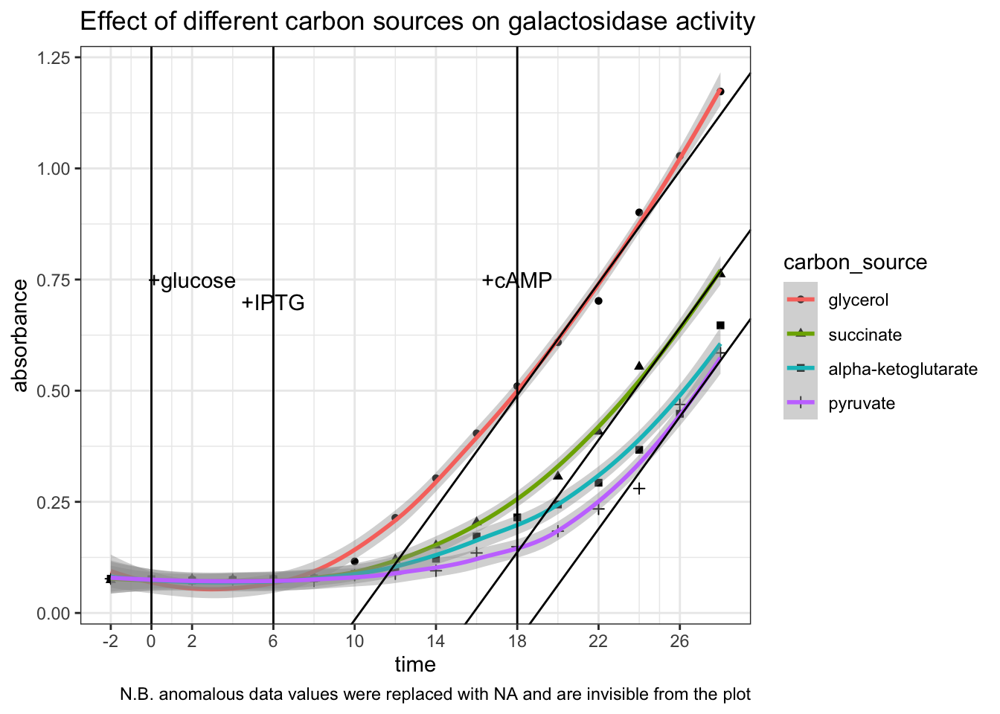

1 Determine the time course of \(\beta\)-galactosidase induction
1.1 Protocal
Trial experiment:
- Take OD600 reading in spectrophotometer 1) to verify that the absorbance is around 0.6 (i.e. the cultures are in exponential growth) 2) to estimate the density of E. coli. in solution
- Add 9.940 ml (9.9 ml + \((20 \times 2)\) \(\mu\)l) of stock E. coli solution into each of two flasks labelled
+IPTGand-IPTG(control), respectively - at 1 min intervals take 20 \(\mu\)l sample and add to a microtube containing 80 \(\mu\)l permeabilisation reagent (200 mM Na2HPO4, 20 mM KCl, 2 mM MgSO4, 0.8 mg/mL hexadecyltrimethylammonium bromide (CTAB), 0.4 mg/mL sodium deoxycholate and chloramphenicol. Whirlimix for 5 seconds. (add permeabilisation reagent as soon as a sample is taken out, which contains antibiotics to stop the bacteria from producing more galactosidase (otherwise the bacteria taken out will just continue to produce galactosidase at the same rate); do not add ONPG until all samples are collected, so assays start at the same time)
- collect 2 samples, at -2 min and 0 min (for both
+IPTGand-IPTG) which represent baseline activity and then:- To the remaining 9.9 ml of E. coli. in
+IPTGflask, add 0.1 ml of IPTG (stock solution provided at 100 mM) so that the final concentration is 1 mM. This will induce the lac operon by acting as an allolactose mimic. Mix. - To the remaining 9.9 ml of E. coli. in
-IPTGflask, add 0.1 ml of salt solution
- To the remaining 9.9 ml of E. coli. in
- Collect 10 additional samples (for each of
+IPTGand-IPTG), and setup a blank: 20 \(\mu\)l of salt solution plus 80 \(\mu\)l permeabilisation reagent. (i.e. measuring 40 samples against one blank). - Add 75 \(\mu\)l of ONPG to 75 \(\mu\)l of each sample and the blank. Incubate at 37oC and start the timer.
- Monitor the reaction until a convenient intensity of colour has developed. Take samples out and note the time of incubation.
- Read absorption at 415 nm against the blank. The readings should not exceed 1.2 to ensure linearity, so it’s important to stop the reaction before the colour gets too dark (in the previous step).
- If any of the readings gets beyond 1.2, incubate for less time in the next experiment
- Plot a graph of A415 against time. Assess the graph:
- Are there any regions of uncertainty? If yes, take more samples in this region in the next experiemnt.
- Has the induction reached completion? If not, take samples in a longer time range (2 hours) in the next experiment.
Optimised experiment:
Perform the same procedure described above with better knowledge on the time of incubation and time range and intervals to take samples.
1.2 Results
control <- c(.060, .076, .077, .079, .080, .082,
.086, .082, .084, .085, .085, .083)
iptg <- c(.077, .082, .079, .098, .103, .136,
.171, .220, .280, .297, .310, .336)
iptg1 <- c(.079, .079, .078, .105, .112, .148,
.202, .239, .274, .335, .362, .440)
iptg2 <- c(.081, .082, .082, .110, .168, .219,
.324, .414, .538, .651, .704, .786)
tibble(
time = rep(seq(-2, 20, 2), 4),
group = rep(c("-IPTG", "+IPTG 1", "+IPTG 2", "+IPTG 3"), each = 12),
absorbance = c(control, iptg, iptg1, iptg2)
) %>% ggplot(aes(time, absorbance)) +
geom_line(aes(color = group)) +
ylab("absorbance (A415)")+
geom_vline(xintercept = 0)+
geom_text(data = tibble(x = 1.4, y = 0.4, label = '+IPTG'),
aes(x, y, label = label))+
scale_x_continuous(breaks = seq(-2, 20, 2))
Conclusion. It takes about 4 minutes for the effect of IPTG on increasing galactosidase activity to become evident.
2 Identify the WT Strain
You are provided with two strains of coli labelled A and B, one of which (‘wild type’) is subject to catabolite repression, and one of which is not. Devise an experimental protocol to determine which strain is the wild type strain.
The E.coli strains are already grown on minimal medium containing 1% glycerol as a ‘poor’ carbon source (which should result in a high intracellualr cAMP concentration). Thus, to test for sensitivity of catabolite repression, we add a ‘good’ carbon source — glucose (which should increase cAMP level and repress galactosidase synthesis).
2.1 Protocol
- Measure OD600 of both strains.
- For each of strains A and B, set up two flasks,
+glucoseand-glucose(i.e. 4 flasks in total); then:- Add 9.440 ml of E. coli to all flasks
- collect 2 samples, at -2 min and 0 min which represent baseline activity and then:
- add 0.5 ml of glucose solution or glycerol solution to
+glucoseflasks and-glucoseflasks, respectively - collect 3 samples at 2, 4, 6 min and then:
- Add 0.1 ml IPTG (100 mM) to all flasks and mix (start induction)
- From 8 to 18 min, take 6 samples at 2 min intervals
- Add 0.1 ml cAMP to all flasks
- Collect samples and set up a blank: 20 \(\mu\)l of salt solution plus 80 \(\mu\)l permeabilisation reagent. (the blank is used by all samples taken from 4 flasks)
- Add 75 \(\mu\)l of ONPG to 75 \(\mu\)l of each sample and the blank. Incubate at 37oC.
- Incubate for appropriate amount of time (as determined in part 1)
- Read absorption at 415 nm against the blank.
- Plot a graph of A415 against time.
- Compare the plots. The strain unresponsive to catabolite inhibition should give similar plots in both
+glucoseand-glucoseconditions. The WT strain should show lower A415 (galactosidase activity) when glucose is added, since its galactosidase synthesis is inhibited by the ‘good’ carbon source, pyruvate.
The experiment in this part also answers the question in the next part, and results are shown there.
3 Devise an experimental protocol to show the role played by cAMP in catabolite repression.
Since our bacteria are grown on minimal medium containing 1% glycerol as a ‘poor’ carbon source (which should result in a high intracellualr cAMP concentration), we need to first use glucose to inhibit galactosidase production (as described in part 2). Then, we add cAMP. If the added cAMP enhances the production of galactosidase, we can prove that it’s cAMP whose level is decreased during catabolite repression (by addition of a ‘good’ carbon source, pyruvate).
The experimental procedure is described in the previous section.
3.1 Results (part 2 and 3)
Optical density. OD600 of strain A and B solutions are 0.309 and 0.505, respectively. Both are within the range in which the bacteria are in exponential growth phase. However, since their densitie differ, when interpreting the result we should not directly compare A to B. Instead, we should assess the effects of glucose and cAMP on each of the strains independently.
Galactosidase activity assay results. The raw data and the plot are shown below.
# strain A -glucose
Ag = c(.089, .049, .089, .048, .070, .072, .079, .111,
.156, .198, .254, NA, .388, .424, .419, .520)
# strain A +glucose
AG = c(.071, .071, .082, .049, .075, .070, NA, .102,
.130, .169, .207, .221, .251, .261, .342, .412)
# strain B -glucose
Bg = c(.087, .086, .097, .073, .091, .089, .099, .156,
.188, .273, .356, .482, .593, .699, .795, .943)
# strain B +glucose
BG = c(.084, .080, .084, .071, .087, .088, .096, .109,
.127, .150, .184, .216, .254, .322, .463, .543)
label = tibble (
x = c(2, 6, 18),
y = c(0.75, 0.7, 0.75),
label = c("+glucose", "+IPTG", "+cAMP")
)
tibble(
strain = rep(c("A", "B"), each = 32),
glucose = rep(c("-", "+", "-", "+"), each = 16),
time = rep(seq(-2, 28, 2), 4),
absorbance = c(Ag, AG, Bg, BG)
) %>%
ggplot(aes(time, absorbance)) +
geom_point(aes(shape = glucose))+
geom_smooth(aes(linetype = glucose), method = 'loess', formula = 'y ~ x')+
# label addition of glucose, IPTG and cAMP
geom_vline(xintercept = c(0, 6, 18))+
geom_text(data = label, aes(x, y, label = label))+
# plot strain A and strain B side by side
facet_grid(~strain)+
# tweak axes and add title & notes
scale_x_continuous(breaks = c(0, seq(-2, 30, 4)))+
labs(
title = "Effect of glucose and cAMP on galactosidase activity of strains A and B",
caption = "N.B. anomalous data values were replaced with NA and are invisible from the plot"
)## Warning: Removed 2 rows containing non-finite values (stat_smooth).## Warning: Removed 2 rows containing missing values (geom_point).
Conclusion. Strain B is WT. In strain B, galactosidase activity was significantly lower in +glucose than in -glucose from t = 6 min to t = 18 min (after IPTG induction, before addition of cAMP). In strain A the difference is less pronounced. Addition of cAMP at t = 18 min markedly increased galactosidase activity in strain B + glucose setup, but had no noticeable effects in the other three setups. This means catabolite repression by glucose is mediated by lowering concentration of cAMP, and thus an addition of cAMP could relieve this repression.
4 Devise experiments to test the following model.
\(\alpha\)-keto acids are the long sought `catabolites’ that control cAMP levels and that they act by inhibiting cAMP synthesis
(Solutions of \(\alpha\)-ketoglutarate, pyruvate, and succinate are available in the lab. E. coli is able to take up any of these exogenously added metabolites.)
4.1 Protocol
Repeat the experimental procedure described in part 2 with only the WT strain (strain B) and replacing glucose with different \(\alpha\)-keto acids. The concentration of the ketoacids are 0.5 M. Thus, to make their concentration in the 10 ml reaction mixture be 10 mM, 0.2 mL of each was added to different flasks individually (alpha-ketoglutarate was 1.0 M, so 0.1 mL of it was added instead).
If the addition of an \(\alpha\)-keto acid alone causes the activity of galactosidase to decrease, it can be considered as the evidence that this ketoacid is involved in catabolite repression. If the following addition of cAMP can ‘rescue’ galactosidase activity, then this can be considered as the evidence that this ketoacid inhibits cAMP synthesis.
4.2 Results
Optical density. OD600 = 0.393, which verifies that the bacteria were in exponential growth phase.
Galactosidase activity assay results. The raw data and the plot are shown below.
# glycerol (control)
gly = c(.075, .076, .076, .076, .077, .078, .116, .214,
.303, .404, .510, .609, .702, .901, 1.028, 1.173)
# pyruvate
pyr = c(.077, .075, .075, .075, .075, .072, .085, .088,
.095, .135, .149, .184, .234, .280, .469, .585)
# succinate
suc = c(.074, .076, .075, .074, .078, .080, .083, .120,
.152, .204, NA, .307, .408, .554, NA, .762)
# alpha-ketoglutarate
akg = c(.077, .076, .073, .074, .076, .078, .088, .097,
.122, .172, .215, .244, .293, .367, .448, .647)
tibble(
carbon_source = as_factor(rep(c("glycerol", "succinate", "alpha-ketoglutarate", "pyruvate"), each = 16)),
time = rep(seq(-2, 28, 2), 4),
absorbance = c(gly, suc, akg, pyr)
) %>%
ggplot(aes(time, absorbance)) +
geom_point(aes(shape = carbon_source))+
geom_smooth(aes(color = carbon_source), method = 'loess', formula = 'y ~ x')+
# rates after adding cAMP (tangent lines)
geom_abline(slope = 0.06314, intercept = c(-0.647, -1.00, -1.20))+
# label addition of glucose, IPTG and cAMP
geom_vline(xintercept = c(0, 6, 18))+
geom_text(data = label, aes(x, y, label = label))+
# tweak the axes and add title & notes
scale_x_continuous(breaks = c(0, seq(-2, 30, 4)))+
labs(
title = "Effect of different carbon sources on galactosidase activity",
caption = "N.B. anomalous data values were replaced with NA and are invisible from the plot"
)## Warning: Removed 2 rows containing non-finite values (stat_smooth).## Warning: Removed 2 rows containing missing values (geom_point).
Conclusion. All three \(\alpha\)-keto acids are shown to be capable of catabolite repression. After adding IPTG, the extents to which the \(\beta\)-galactosidase activity increases in E. coli provided with \(\alpha\)-keto acids are significantly and consistently lower than in E. coli provided with glycerol only. Addition of cAMP has no significant effect on the glycerol control, but was able to improve the rate of increase of \(\beta\)-galactosidase activity (gradient on the graph) in groups with \(\alpha\)-keto acids to about the same as the glycerol control (shown as tangent lines in the plot). The capability of different \(\alpha\)-keto acids can be ranked qualitatively: pyruvate > \(\alpha\)-ketoglutarate > succinate.